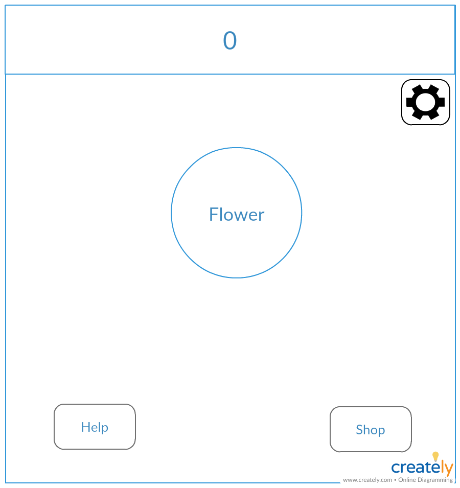

Main Screen Sketch
This will be the main page/hub of our game. This is where most of the activity and player interaction takes place.
Flower: This is the where the icon will be placed. The icon will be clickable by the player. Once the icon is clicked, the score will increase.
Score (money count): This is represented by the numbers on the top of the page. As the player click the icon, the score will go up.
Shop: Opens the "Shops" menu.
Help: Opens the "Help" bar.
Settings: Opens the "Settings" menu.